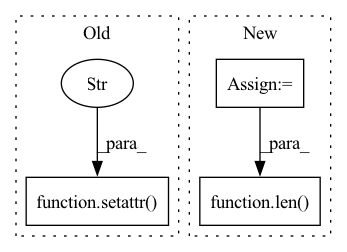

Pattern ID :18827
Before Change
**kwargs
)
setattr( self, f"optim{ind}" , optimizer) // cannot use pytorch ModuleList for some reason with optimizers
if self.use_ema:
self.ema_unets.append(EMA(unet, **ema_kwargs))After Change
lr, wd, eps = map(partial(cast_tuple, length = self.num_unets), (lr, wd, eps))
optimizers = []
for unet, unet_lr, unet_wd, unet_eps in zip(decoder.unets, lr, wd, eps):
optimizer = get_optimizer(
unet.parameters(),
lr = unet_lr,
wd = unet_wd,
eps = unet_eps,
group_wd_params = group_wd_params,
**kwargs
)
optimizers.append(optimizer)
if self.use_ema:
self.ema_unets.append(EMA(unet, **ema_kwargs))
// gradient clipping if needed
self.max_grad_norm = max_grad_norm
self.register_buffer("step", torch.tensor([0.]))
results = list(self.accelerator.prepare(decoder, *optimizers))
self.decoder = results.pop(0)
for opt_ind in range(len( optimizers) ):
setattr(self, f"optim{opt_ind}", results.pop(0))
def save(self, path, overwrite = True, **kwargs):In pattern: SUPERPATTERN
Frequency: 3
Non-data size: 3
Instances Fragment ID: 61106316
Project Name: lucidrains/dalle2-pytorch
Commit Name: 58892135d9bcf117921c885dda161c0b67452096
Time: 2022-06-19
Author: aidan.dempster@gmail.com
File Name: dalle2_pytorch/trainer.py
M Class Name: DecoderTrainer
N Class Name: DecoderTrainer
M Method Name: __init__(10)
N Method Name: __init__(9)
M Parent Class: nn.Module
N Parent Class: nn.Module
M File Name: dalle2_pytorch/trainer.py
N File Name: dalle2_pytorch/trainer.py
M Start Line: 591
M End Line: 620
N Start Line: 577
N End Line: 633
Before Change
final_scores = torch.cat(final_scores)
setattr(interaction, "pos_len_list", pos_len_list)
setattr( interaction, "user_len_list" , list(np.add(pos_len_list, neg_len_list)))
return interaction, final_scores
@torch.no_grad()After Change
neg_scores = scores.masked_select(used_mask)
neg_scores = torch.split(neg_scores, neg_len_list, dim=0)
tmp_len_list = np.add(pos_len_list, neg_len_list).tolist()
extra_len_list = np.subtract(self.tot_item_num, tmp_len_list).tolist()
padding_nums = self.tot_item_num * len(tmp_len_list) - np.sum(tmp_len_list)
padding_tensor = torch.tensor([-np.inf], device=self.device).repeat(padding_nums)
padding_scores = torch.split(padding_tensor, extra_len_list)
final_scores = list(itertools.chain.from_iterable(zip(pos_scores, neg_scores, padding_scores)))
final_scores = torch.cat(final_scores)
setattr(interaction, "pos_len_list", pos_len_list)
setattr(interaction, "user_len_list", len( tmp_len_list) * [self.tot_item_num]) // XXX unused
return interaction, final_scores
Fragment ID: 61106312
Project Name: rucaibox/recbole
Commit Name: 1a8d4d24d3eb122e747eacf9846d338fcc9044d7
Time: 2020-09-28
Author: 1337990880@qq.com
File Name: recbox/trainer/trainer.py
M Class Name: Trainer
N Class Name: Trainer
M Method Name: _full_sort_batch_eval(2)
N Method Name: _full_sort_batch_eval(2)
M Parent Class: AbstractTrainer
N Parent Class: AbstractTrainer
M File Name: recbox/trainer/trainer.py
N File Name: recbox/trainer/trainer.py
M Start Line: 214
M End Line: 240
N Start Line: 214
N End Line: 246
Before Change
return results
setattr( transform_obj, "__call__" , _new_call)
skip_list = ["Compose", "RandomApply"]
// register all existing transforms in torchvisionAfter Change
// args_format = ["img", "pic"]
if is_child_of(transform_obj, torch.nn.Module):
args = get_args(transform_obj.forward)
if len( args) == 1: // and args[0] in args_format:
_reset_forward(transform_obj)
elif hasattr(transform_obj, "__call__"):
args = get_args(transform_obj.__call__) Fragment ID: 61106313
Project Name: alibaba/easycv
Commit Name: aee752e7c00bc5c541cf8e52488cc7c81ca73cdf
Time: 2022-04-06
Author: jiangnana.jnn@alibaba-inc.com
File Name: easycv/datasets/shared/pipelines/third_transforms_wrapper.py
M Class Name: AnonimousClass
N Class Name: AnonimousClass
M Method Name: wrap_torchvision_transforms(1)
N Method Name: wrap_torchvision_transforms(1)
M Parent Class:
N Parent Class:
M File Name: easycv/datasets/shared/pipelines/third_transforms_wrapper.py
N File Name: easycv/datasets/shared/pipelines/third_transforms_wrapper.py
M Start Line: 11
M End Line: 25
N Start Line: 61
N End Line: 75